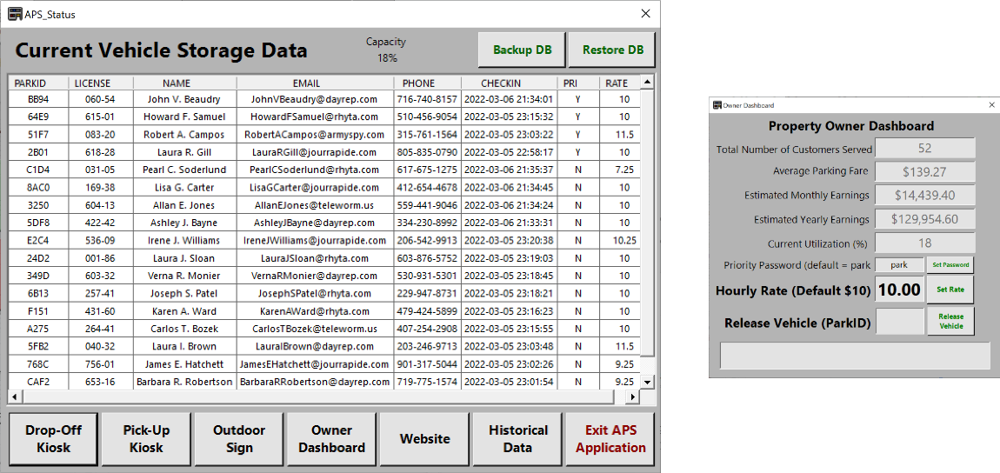
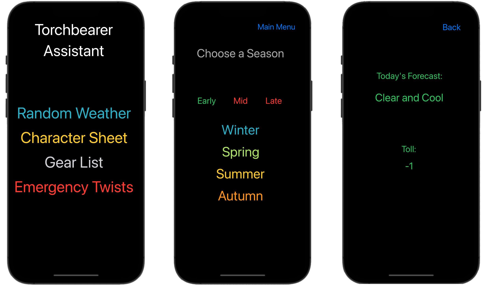
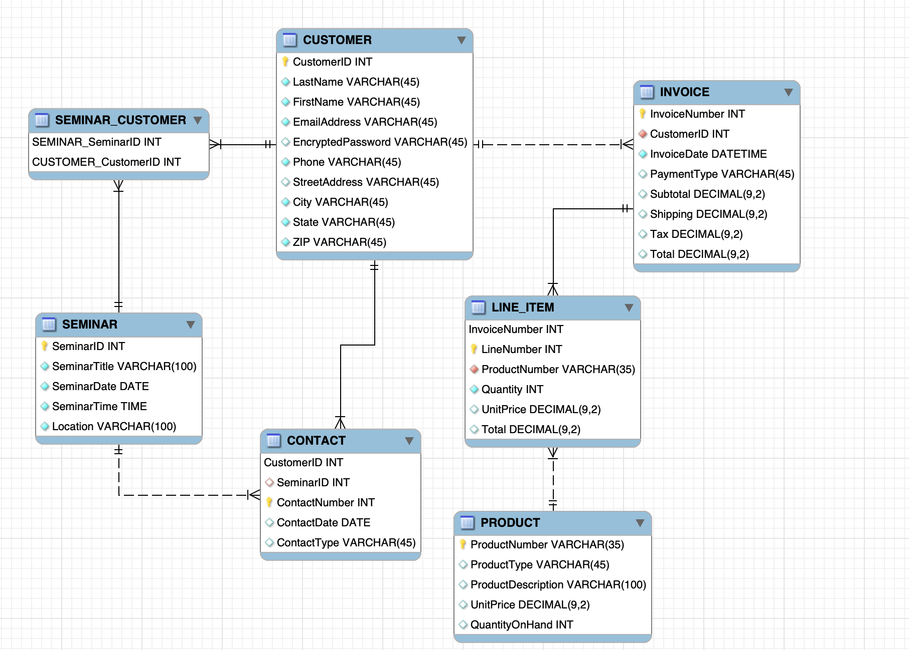
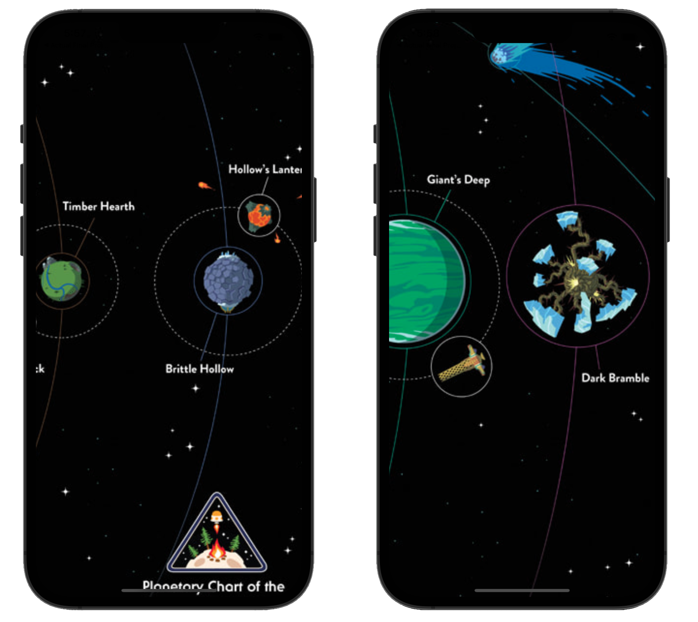

This was a group project I worked on as a part of my Software Engineering course. It was written in Visual Basic and really tested our teamwork skills as we had people in our group from around the world.
This is an iPhone app made in Swift designed to help with the playing of a tabletop roleplaying game called Torchbearer. The app keeps track of important information and also features a random weather and event generator.
This Enhanced Entity Relationship diagram was made for a project in my Databases class. It was created in MySQLWorkbench.
This is a program we modified for class to solve the Towers of Hanoi game using a restricted ruleset where you can only move to an adjacent peg. It receives input on the size of the tower then outputs the list of moves that need to be made. It uses a recursive method to keep the algorithm simple to read.
package HW3;
import java.util.Scanner;
public class TowersOfHanoi {
public static String showMoves(int n, char startPeg,
char destPeg, char tempPeg) {
if (n == 1) {
return "Move disk 1 from peg " + startPeg
+ " to peg " + tempPeg + " and then to " + destPeg +"\n";
}
else { // Recursive step
return showMoves(n - 1, startPeg, destPeg, tempPeg)
+ "Move disk " + n + " from peg " + startPeg
+ " to peg " + tempPeg + "\n"
+ showMoves(n - 1, destPeg, startPeg, tempPeg)
+ "Move disk " + n + " from peg " + tempPeg
+ " to peg " + destPeg + "\n"
+ showMoves(n - 1, startPeg, destPeg, tempPeg);
}
}
public static void main(String[] args) {
Scanner in = new Scanner(System.in);
System.out.print("Enter number of disks ");
int nDisks = in.nextInt();
String moves = showMoves(nDisks, 'L', 'R', 'M');
System.out.println(moves);
}
}
This iPhone app is an interactive map for the game Outer Wilds. It is also written in Swift.
This paper is about the technology and ideology behind creating CAPTCHAs. It goes into the history of CAPTCHA and reCAPTCHA and some current research into potential future CAPTCHA ideas.